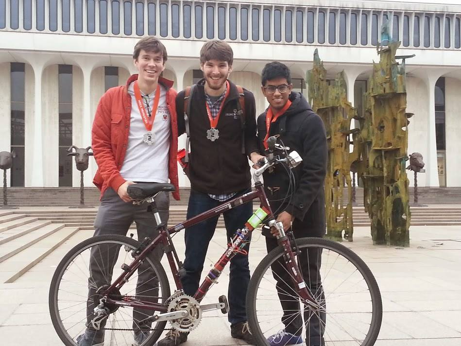

Introduction
Manually changing gears while riding a bicycle is so outdated. We built an Arduino-based automatic transmission system that shifts bicycle sprockets to maintain a steady pedaling cadence. To accomplish this, we utilized hall-effect sensors to measure cadence and speed, an Arduino Mega for processing and I/O, and a high-torque servo as an actuator to switch sprockets.
People
Ankush Gola, Joseph Bolling, Ted Brundage
Press
Video
Photo of Finished Product
Brief Technical Overview
We measured rear wheel speed using hall-effect encoders and converted this value to a pedal cadence using pre-determined gear ratios. We also directly measured pedaling cadence to enforce accuracy and determine if the rider was pedaling fast enough for gear switching to work. If pedaling cadence was different from the target cadence, the system would automatically shift accordingly. Shifting gears was accomplished by connecting the shift cable to a high-torque servo and carefully sending PWM values to tighten or loosen the cable. We had to tweak the PWM signals in order to get the servo positions just right. Surprisingly, even while the servo was changing gears, it did not draw an immense amount of current because the the friction in the gear system took off some of the load.
All of the code for this project resides in byke.ino file and should be pretty self explanatory. This code handles the interrupts for both hall-effect sensors, calculates angular speeds, and sends PWM values to the servo if changing gears if necessary. As always, feel free to email me with any questions.